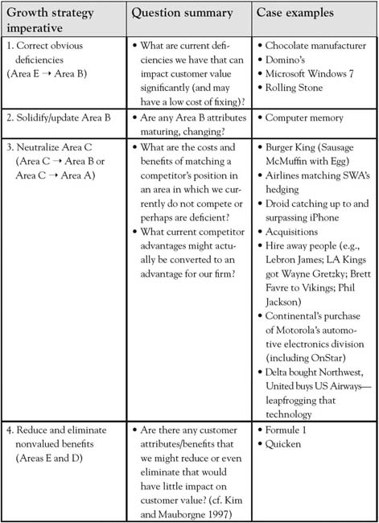
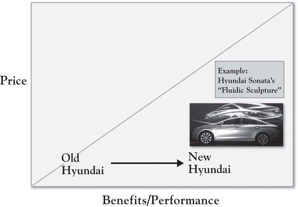
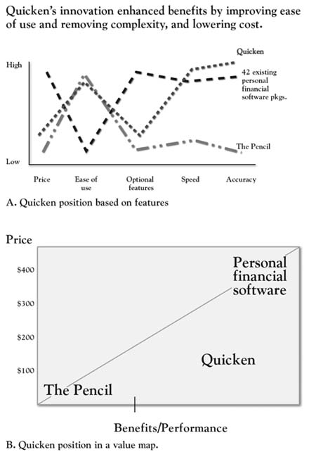
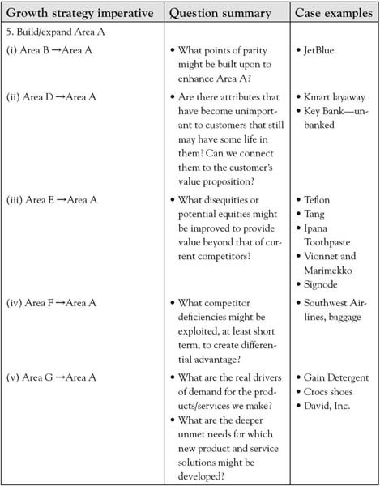

The strategic positioning assessment is critical in highlighting strategic priorities for the company. In addition, there are some tactical insights that emerge that can be fixed in a straightforward way. The fundamental growth imperatives can be summarized as follows:
The goal of 3-Circle analysis is to leverage the insight from the initial, structured analysis of customer feedback into a preliminary set of ideas or brainstorms about growth. We will provide a systematic walk-through of these ideas. Figure 6.5 "Growth Imperatives 1 Through 4" summarizes the analysis of the first four growth imperatives.
Figure 6.5 Growth Imperatives 1 Through 4
As we emphasize throughout the book, customer value is enhanced (by way of the numerator of the value ratio) by ensuring that the product substantively delivers upon and exceeds expectations. At times, there are very fundamental issues that emerge in research and analysis that suggest obvious change—for example, the proverbial low-hanging fruit. Note such insights occur both for substantive changes in quality and basic issues on which our current superiority is not being effectively communicated. A few examples include substantively changing benefits and clarifying customer perception.
In Michael Porter’s work on competitive strategy and the value chain, he notes an example of a bulk chocolate manufacturer who sells its finished product to a confectionary producer in bulk bars.Porter (1985). Essentially, a study of the customer’s inbound logistics and operations (i.e., the real processes and needs) led to the discovery that the chocolate manufacturer was wasting time hardening and packaging the chocolate, when the confectionary producer had to remelt it upon arrival. Each manufacturer saved time and money when the chocolate manufacturer began delivering the product in liquid form. This illustrates a reality in most firm-customer relationships—there very often exist opportunities to improve value (sometimes for both parties) that are surprisingly related to basic blocking and tackling rather than significant innovation. Domino’s experienced increases in revenue and operating profit of 18% and 28%, respectively, in the first quarter of 2010 after communicating in its advertising that it was responding to consumer dissatisfaction with its pizza recipe with an improved product.Solsman and Ziobro (2010, May 4); Bryson (2010). Similarly, Microsoft’s notorious reputation of a controlling, complex, and unreliable operating system was softened by the introduction of Windows 7, which was developed with advertising in which users explained how the new operating system integrated their ideas for improvement.“10 Things Microsoft Did” (2010, March 4). Finally, Hyundai is an excellent example of a firm once characterized by significant disequity that has substantially improved its position. In a difficult 2009 market for the auto industry, Hyundai increased sales over 6% in the United States, improving market share to 4.3% from 3.0% in 2008 with substantive changes in car design, warranty, and platform integration to improve cycle time.Ohnsman and Cha (2009, December 28); Saad and Hill (2010, February 25). Figure 6.6 "Hyundai Sonata’s “Fluidic Sculpture” Value Map Repositioning" illustrates Hyundai’s desired shift on the industry’s value map, particularly with a focus on new, more elegant car designs.
A significant insight in 3-Circle growth analysis is that items that emerge in Area E that are misperceptions can be corrected through communications. We would not claim to be the first to discover certain types of misperception in the marketplace that can be corrected. A clever example of this is Rolling Stone magazine’s classic “perception vs. reality” ad campaign back in the 1980s and 1990s, which sought to correct major advertisers’ misperception that the magazine’s readership was composed primarily of hippies. The ads were two full pages—a left-hand page titled “perception” and a right-hand page titled “reality,” each presenting insights about previous vs. new readers, respectively. One of the best-known versions of the ad had a left-hand page showing a peace sign, and a right-hand page showing a Mercedes-Benz hood ornament. Similarly, SC Johnson currently fends off the longtime perception for its Pledge furniture cleaner product that it leaves wax build-up by pointing out that the product does not even have wax in it! (The tag line is “No wax. No build-up.”) Surprises in customer perceptions are a very common outcome in 3-Circle growth strategy projects, producing significant growth opportunities. We will detail a pharmaceutical case in Chapter 9 "Summary: Growth Strategy in 10 Steps" in which the firm discovered and responded to important physician misperceptions about their drug’s outcomes and managed care system.
Figure 6.6 Hyundai Sonata’s “Fluidic Sculpture” Value Map Repositioning
Points of parity are those dimensions of value that your offering is expected to have. Laptop computers have at minimum 3 or 4 gigabytes of hard drive space and 32 megabytes of RAM. Those basic requirements used to be a lot lower. The Wikipedia entry for Moore’s Law (which describes the exponential growth of digital device capabilities) indicates that hard drive memory capacity—a standard feature of personal computers—grew from 0.01 gigabytes in 1985 to 1,000 gigabytes in 2010.http://en.wikipedia.org/wiki/Moore’s_law The issue here is that even points of parity evolve and move. Returning to the six lessons about attributes from Chapter 4 "The Meaning of Value", there is a dynamic pattern to value creation in markets that begins with a firm’s incentive to try something new—a new value-added feature like a camera on a cell phone, for example. Once the market finds value in that feature, it becomes a point of parity, that is, a basic expectation of the market. But it is important for the firm to keep an eye on that, as some firms may continue to improve it, for example, by improving picture quality or allowing for more video capacity or easier sharing. This is not to suggest that every effort to improve points of parity should be imitated without consideration of the value that customers obtain from it. Instead, the more general point is to take a systematic look at Area B attributes to ensure that your offering is not slipping behind on these table stakes.
In the normal course of competition in the free market, one of the most fundamental principles is that successful offerings get imitated unless they are protected legally or by unique resources, capabilities, and assets. McDonald’s has experienced success in mimicking both the higher quality coffee and, to some extent, the consumption experience of Starbucks stores, at substantially lower prices. McDonald’s marketing communications program includes a billboard with huge lettering saying “four bucks is dumb,” with a parenthetical remark below (“now serving espresso”) and the golden arches logo in the lower right. Ironically, a McDonald’s competitor has similarly pursued an imitation strategy so extreme that they depict a brazen Burger King (with the smiling plastic mask) breaking into McDonald’s corporate headquarters to steal the secret plans for the Sausage McMuffin. Burger King wants you to know that you get the exact same product, with one difference: a price of $1.00 rather than $1.99. Each of these actions would be seeking to directly position south of the competitor on the value map, essentially with a denominator (price) strategy. We might think of three strategies related to neutralizing Area C:
Kim and Mauborgne’s (2005) empirical research on value innovation and blue ocean strategy revealed an important element of strategy that had not been discussed previously. They found firms who were able to find growth, even in highly competitive industries, by reducing or even eliminating attributes or benefits that customers valued less, and by investing in significantly improving the most important values. An example is adapted in Figure 6.7 "Quicken’s Innovation: Reducing Complexity", depicting the strategy for Quicken’s personal finance software, which was introduced into an existing market of 42 powerful, but very complex and difficult-to-use, software products. Scott Cook, founder of Intuit, considered those products but also had in mind positioning against the simplest of all financial management products—the pencil! As Figure 6.7 "Quicken’s Innovation: Reducing Complexity" shows, Quicken’s value was in its ease of use but equivalent power relative to the software packages of the day, yet it maintained the speed and accuracy advantages over the pencil. The company simplified the product by stripping out many complex features and using straightforward language. The simpler product also costs less, illustrating the core principle in Kim and Mauborgne’s (2005) concept of “value innovation”—that companies create significant gains in value by focusing on building a few benefits that customers value and eliminating or reducing those that are less valued. The elimination of some benefits can lower costs, leading to lower prices as well. Figure 6.7 "Quicken’s Innovation: Reducing Complexity" illustrates the same Quicken positioning strategy as captured in a value map.
The 3-Circle model provides a simple way to explain the essence of competitive strategy: the goal is to build Area A relative to Area C. Seeking to shrink Area C may be part of that strategy. But building Area A is a code word for the raison d’être for any business—what truly unique value do you bring into the world? Having analyzed customer value and categorized the value using the seven categories in the framework, you will find a variety of ways to think about how to build the distinctive value in Area A. As captured in Figure 6.8 "Growth Imperative 5: Building Area A", there are a number of areas in the 3-Circle model that provide sources of value on which Area A might be built.
Figure 6.7 Quicken’s Innovation: Reducing Complexity
Source: Adapted from “Creating New Market Space,” by W. C. Kim and R. Mauborgne, 1999, Harvard Business Review (January–February), 83–93.
Figure 6.8 Growth Imperative 5: Building Area A
JetBlue was founded on a unique passenger experience. Building upon the original model of Southwest Airlines of a regional hub-to-hub airline with an emphasis on low cost, JetBlue captured significant unique dimensions of value by taking a standard flying experience and enhancing the comfort and excitement of the passenger experience. In one of its early advertisements—a humorous “mockumentary”—JetBlue employees explain, for a variety of basic services, that when customers ask them to do something (e.g., seat them together with another passenger), they actually do it. So when a passenger asked for some headphones, “I hooked him up,” notes a flight attendant. This is a parody on the notion that many existing airlines often fail to meet the most basic of expected services. Yet JetBlue’s distinctive value is in taking a commoditized in-flight experience and significantly improving it. The firm seeks a very passenger-oriented in-flight experience from its attendants, and has both comfortable leather seats and entertainment systems for every passenger on every flight. This is a classic illustration of taking standard attributes in the overall value proposition and pushing them to new value-enhancing levels in ways that require significant investment. For such a strategy to work, the attributes or benefits must be (a) fundamentally important to customers, and (b) credibly differentiable among competitors. In certain circumstances, there may be opportunities for differentiation because an industry (both firms and customers) has become so accustomed to its points of parity that all take certain levels of value as given. So when Wal-Mart takes its standard in-store layout that has been virtually the same (and similar to other mass-merchant rivals) for decades and enhances colors, layout, and fashion orientation, the result is a remarkable contrast that sharpens the value customers obtain from its low-price Area A. In sum, raising the levels of Area B attributes to enhance Area A is often a process of exploring the customer’s experience around existing attributes and then uncovering how to build a new experience.
If we classify an attribute or benefit in Area D, it means that this dimension of value is or was jointly produced by each firm but that it is outside the customer’s circle. It is possible that there still exists value in such retired attributes. Determining whether there might be value there, though, requires some skill in discrimination. There are examples of bringing back values that have been successful, as in car companies bringing back vintage cars or introducing classic design elements in contemporary cars. We might think of a category of value that may have seemed to go out of style but, in fact, is classic enough to have an appeal to certain consumers in every generation—for example, the simplicity and elegance of Frank Lloyd Wright architecture. Kmart created a point of difference by bringing back a layaway capability when difficult economic times set in back in 2008, and it got a great deal of positive press as a result. In a 2008 Wall Street Journal article, Mark Snyder, Kmart’s chief marketing officer, noted, “While not sexy, layaway became the big idea at Kmart these holidays.”Mohammed (2010, March 2). Similarly, in large banks, check cashing has not been a highly demanded service, as consumers typically deposit checks and electronic deposits have become increasingly common. As competition for middle-class and wealthy consumers has heated up, some banks have looked for business elsewhere, discovering a very large segment of “unbanked” or “underbanked” consumers who do not have relationships with banks, yet spend over $11 billion per year at financial institutions that cash checks.Carrns (2007, March). In response, Key Bank has experimented with check-cashing services in a variety of retail bank branches, with specific technology for identifying customers and providing other services for a cash economy in which many customers engage.
As noted earlier, there are multiple interpretations of Area E. The first we addressed previously: There are some dimensions of value that may be important and on which we are not meeting expectations. The strategy for such dimensions is to correct obvious problems to negate the disadvantage (a high priority). But the other, more subtle element of Area E (same with D and F) is that it may contain dimensions of value that are currently undervalued by the market. A couple of examples have been mentioned throughout this book. Upon first introduction, the feature “Teflon coated” was quickly relegated to Area E status, as consumers did not connect with the value of fat-free cooking, as the original promotion held. Yet when the feature was connected to a more important value (ease of clean-up, time savings), Teflon coating became an instant strong point of difference. Similarly, earlier we mentioned Tang’s rise to prominence in Asia and other locations as the firm has leveraged the brand’s recognition with packaging innovations that better connected with customer needs.
The general notion here is that the firm may discover in Area E hidden assets that may—with a little extra effort—connect well to customer values. In a classic Harvard Business Review article, Nariman Dhalla and Sonia Yuspeh cite many examples of firms who gave up on certain brand assets under the assumption that they were in the mature phase of the product life cycle.Dhalla and Yuspeh (1976). They cite the case of Ipana toothpaste, for example, given up for dead by its corporate parent and sold off to small investors. The new owners subsequently produced healthy sales for a reformulated product with the same packaging and branding, with later research showing 1.5 million regional users of the brand. More recent examples of the same phenomenon have occurred in fashion, with the successful reintroduction of the brands Vionnet and Marimekko, each long-ago pioneers in the industry and now experiencing new energy through new ownership.Binkley (2009, November 6); Sains (2004, April 26).
At times, an organization may not realize the strength of its current offering. In the earlier cited work on decommoditization, Rangen and Bowman offer up the example of Signode Corporation, a manufacturer of steel strapping for industrial applications.Rangen and Bowman (1992). In customer research, the company discovered that a certain segment of customers put a high value on its bundled offering of strapping equipment, supplies, and engineering service. Essentially, the unique value of the bundling was unknown to the firm, who assumed it was unimportant in the customer’s decision calculus. In the firm’s assessment (prior to the research), this was essentially an Area E item, not believed to be particularly influential in customer decisions. The discovery that this was more important to some customer segments than first thought led to clearer segmentation of the market and more profitable pricing policies.
As noted earlier, there are risks associated with attacking a competitor on a weakness and potentially leveraging that weakness into a strength or point of difference. However, the strategy may be most likely undertaken when the competitor will find it difficult or unprofitable to follow. A recent illustration is Southwest Airline’s taking advantage of the baggage fees introduced by legacy airlines like United, Delta, and Continental. Southwest has countered this move with a steadfast refusal to introduce fees for the first two bags checked and a humorous advertising campaign built around the theme “Bags Fly Free.” While debate has ensued about Southwest’s decision to eschew significant revenue the other airlines are gathering, the company points to its gains in passenger miles and load factor, each surprisingly up 9% and 11%, respectively, in August 2009.Bachman (2009, October 14); Associated Press (2010, May 3). Southwest executive Kevin Krone reflects the company’s resolve to stick with the no fee policy, noting, “If we’re trying to get people to travel, we should probably let people take their suitcase.”
One of the exciting dimensions of the 3-Circle model is the fact that it graphically illustrates a reality that we often lose sight of on a day-to-day basis: that customers always have unmet needs or needs that have not been fully met. In the nearly $7-billion laundry detergent market, Procter & Gamble (P&G) was able to make significant strides in market share for their brand Gain, originally introduced in 1969 as an enzyme-driven laundry soap for difficult stains. More recently, deeper study of consumer needs uncovered a powerful—if somewhat obvious in hindsight— conclusion that consumers are driven in laundry detergent choice as much by what they smell as by how the detergent cleans. In fact, scent connected especially well for ethnic segments, such as Hispanics.Byron (2007, September 4). The repositioning of the brand around scent was enormously successful, as Gain picked up 3 percentage points in market share, that increment valued at $198 million annually, and the brand became P&G’s 23rd billion-dollar brand. In a similar vein, Crocs shoes had to counter long-standing disequity that its shoes were ugly by bringing attention to the comfort of the shoes with the theme “feel the love” (see Figure 6.9 "Crocs Advertisement"). Croc’s revenue increased 24% in the 1st quarter of 2010, compared to the 2009 results, with a $28-million improvement in net income.Young (2010, April 20); Business Wire (2010, May).
In each of these cases, the firms did not discover needs that they were not already aware of. What is different here is that once the firms understood the importance of these values, in each case, they asked how they could more effectively deliver on or connect with these needs. In short, these efforts were not framed as technology in search of markets but instead were understood to be customer needs in search of solutions. That is a very important distinction.
The topic of brainstorming around unmet needs is quite important (and complex), and there exist a number of helpful sources that dive deeply into the topic.In our view, some of the most helpful frameworks can be found in Eric von Hippel’s (1988) work on innovation by studying lead users; Rao and Steckel’s (1998) insightful chapter on studying unmet customer needs; Christensen et al.’s (2007) framework on customer “jobs”; and MacMillan and McGrath’s (1998) study of the customer’s consumption chain. It is beyond the scope of the current work to overview these approaches, but we will offer a short, concrete insight that builds upon our earlier coverage of understanding deeper customer values. Consider a firm we will call David, Inc., which competes in electronic commerce industry, working with billion-dollar customers in a targeted industry. The competitor is Goliath Corp., inventor of the current technology used in the industry. Our analyst for David, Inc. (let us call him Dave), undertook a 3-Circle growth strategy analysis with a strong predisposition that to win business from Goliath, it would be critical to reduce and allocate the customers’ costs for them, to be compliant with security protocols and governance practices, and to reduce complexity and time. While these expectations are all accurate at a certain level, in-depth interviews with customers had an eye-opening impact on Dave’s thinking:
So, what did we learn in talking to customers? A LOT. News flash—analysts write about features and capabilities, not customer needs. If you want to find out what is really going on, ask a customer—they are happy to tell you…I thought it was all about technology and capabilities. Sure, technology is important, but what customers are really looking for is partnership.
Figure 6.9 Crocs Advertisement
Prospective customers ultimately conveyed, very frankly, that they were tired of being treated like a “captive audience” by Goliath Corp. Frustration was such that when one vice president of finance for a potential customer was asked, “What matters most in a technology vendor?” she replied, “The ability to easily replace them.” A vice president of information technology (IT) unexpectedly answered the same question, “The ability to help us move faster.” Rather than being concerned about features offered by a vendor, he was ultimately concerned with the fact that his reputation was on the line in getting the IT infrastructure to a point where it could keep up with, and not constrain, the speed with which his firm was doing business. These deeper Area G insights and frustrations gave the David, Inc., team new inspiration. Instead of being frustrated by the impossible task of unseating the dominant competitor, the team developed strategy with the belief that there were ways to quietly and effectively partner with customers. Business could be taken from Goliath Corp. not as a pure cost-reduction positioning (although that was important), but more broadly in terms of moving quickly to next-generation solutions and to broaden the types of information that could be electronically moved in the interest of partnering and helping customers maintain the pace of business.